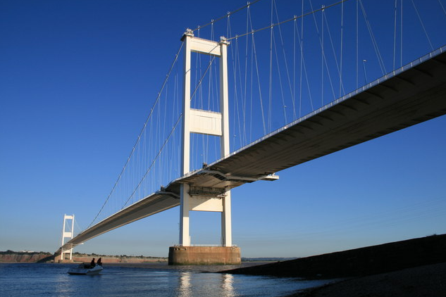

1983–1985
Yamaha SR250
I don't actually have any photographs of my own of this beast of a bike, so the one below is borrowed from the internet.
What a step up.
At the time I thought this was the ultimate motorcycle. After the TS100 it seemed enormously powerful: all 21 horsepower of it, apparently capable of a breathtaking 81 mph.
It even had a stepped seat and raised handlebars which, in my 17-year-old mind, gave it more than a passing resemblance to a Harley-Davidson.
It didn't.
Obviously, It Needed Customising
Despite the fact that Yamaha had somehow managed to produce a perfectly usable motorcycle without my assistance, I naturally decided that it needed improving.
I “borrowed” a length of black steel electrical conduit from the training workshops and put my newly acquired pipe-bending skills to good use.
The result was a magnificent homemade sissy bar.
I bent the conduit through 180 degrees into an upside-down U, then attached this engineering masterpiece to the rear grab rail with a couple of Jubilee clips and some electrical tape.
I'm amazed Yamaha never copied the design.
I kept the SR250 for the remainder of my time at AAC Chepstow. Compared with the TS100, journeys home became considerably easier.
I could almost keep up with motorway traffic now.
The Chepstow Bike Gang
There weren't actually that many bikes among our little group on camp.
I remember a Yamaha RD250LC, a Suzuki X5, possibly a Honda XT125 and, if my memory serves me correctly, somebody had a 125cc Harley-Davidson trail-style bike.
That may have been about it.

On an evening we'd sometimes venture across the Severn Bridge to Aust Services.
Crossing the bridge on a lightweight motorcycle could be entertaining. The constant side winds meant riding with the bike apparently leaning at about 45 degrees just to continue travelling in a straight line.
Aust Services was apparently the place to be seen back then.
I'm not entirely sure why.
My First Proper Crash
While home on leave one weekend, I had my first proper road accident.
It was entirely my fault.
I rode into the back of a car.
He stopped more quickly than I did.
The front wheel must have hit the car fairly hard because the forks ended up slightly bent, but my left shin took most of the impact.
The skin had split badly enough that I could actually see the bone underneath.
Ouch.
Oddly, there wasn't much blood.
And yes, before anyone asks, I can see my reflection in a mirror.
The police arrived and the officer asked the obvious question:
“What happened?”
I gave him the equally obvious and spectacularly unhelpful answer:
“I'm not really sure. I wasn't paying attention.”
That particular piece of honesty resulted in a court appearance and three points for driving without due care and attention.
I made a mental note to come up with a better answer if there was ever a next time.
To make matters slightly worse, because I was serving in Her Majesty's Forces and had been summoned to court, an officer had to accompany me because I'd apparently brought the Army into disrepute.
Fortunately, a nice nurse stitched my leg back together and I was soon riding the bike again.
The forks remained slightly bent, which meant the handlebars pointed a little to the right from then on.
Character, I called it.
Camping With John
The SR250 even managed a couple of camping trips, usually with my great friend John Whiting on the pillion seat.
So that was two of us, all our camping equipment and whatever else we thought we needed, loaded onto a 250cc motorcycle.
A cheap pair of Oxford throw-over panniers and a rucksack were enough.
There was no point wasting valuable luggage space carrying beer.
You could buy that when you got there.
One Easter Bank Holiday weekend John and I were camping somewhere around Newquay in West Wales.
We were sitting comfortably in the campsite bar one evening when a couple approached us and rather unexpectedly offered to let us sleep in their car that night.
We had absolutely no idea why.
Then we went outside.
Our tent had disappeared.
There must have been close to ten inches of snow covering everything.
We declined the offer, dug our way back into the tent and settled down for the sort of deep sleep that only two young men returning from a campsite bar could reasonably expect.
We survived.
My First Holiday Abroad Without the Parents
Another first around this period was my first foreign holiday without my parents.
Ian “Mo” Moorhouse and I went to one of the Spanish Costas.
Unfortunately, I can remember the hotel better than I can remember where it actually was.
I think it was called the Hotel Horizonte, or something very similar.
We hired a pair of mopeds while we were there and spent some time riding around and exploring the local area.
The rest of the holiday appears to have revolved largely around drinking.
I consumed so much vodka and orange that I couldn't stand the taste of orange juice for years afterwards.
I also had my ear pierced by some girl in the hotel foyer.
More than forty years later I still occasionally get a little lump in the piercing.
Probably not the finest example of sterile medical procedure.
Leaving Chepstow
Eventually I successfully completed my apprenticeship at Chepstow.
That was followed by another six months of Army training at Gibraltar Barracks in Camberley.
The SR250 stayed at home.
By then I decided to let the train take the strain.
Camberley was around 140 miles from home and, at the time, the idea of riding that distance each way on the Yamaha seemed like travelling to the ends of the earth and back.
Funny how perspectives change.
That journey was nothing compared with some of the distances motorcycles would eventually take me.
Time for Something Bigger
The SR250 had felt incredibly grown-up when I bought it.
Compared with my little TS100 it was faster, more comfortable and capable of taking me much further from home.
It carried me through the last part of my apprenticeship, across the Severn Bridge, on camping trips with John and through my first proper motorcycle accident.
But inevitably, 250cc soon stopped feeling quite so enormous.
It was time for another step up.